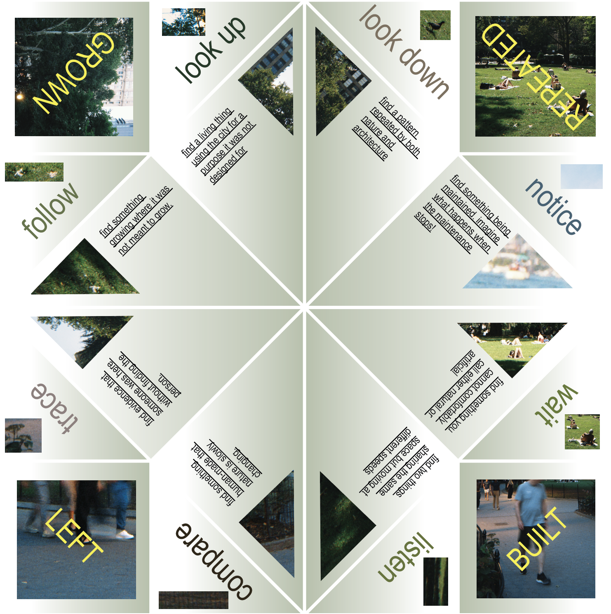
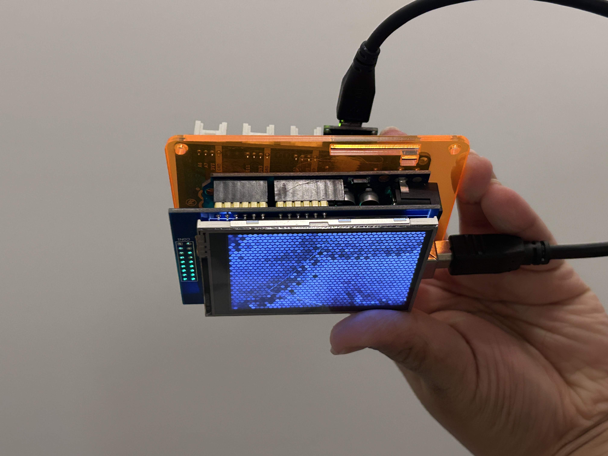
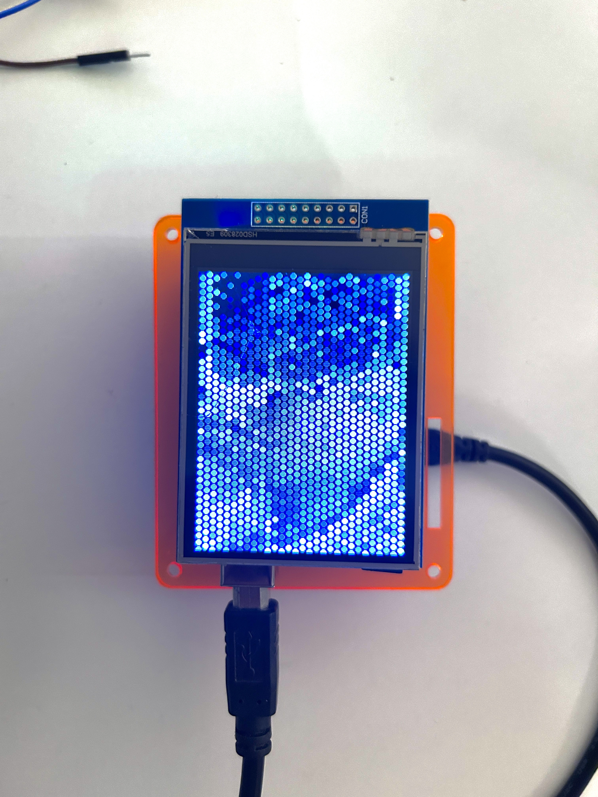
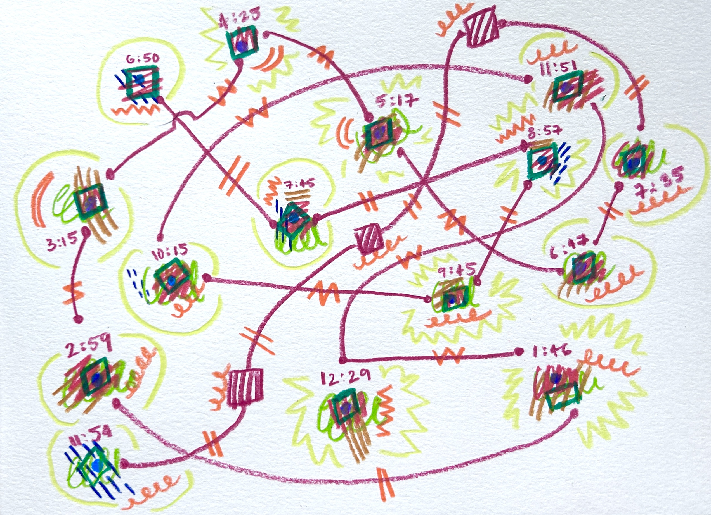
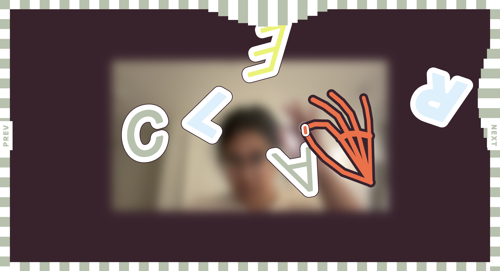
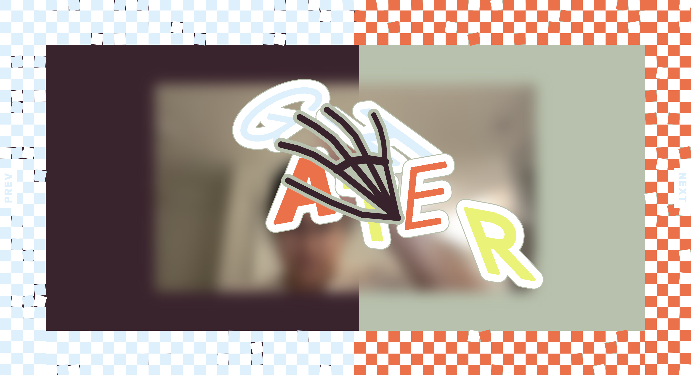

Concept / How might we
How might a small physical tool change what someone notices while walking through a city?
How can a walk reveal overlaps between nature, culture, infrastructure, and everyday traces?
Description
Look Again is an origami chatterbox designed to be used while walking through the city. It generates prompts
such as finding something growing where it was not intended to grow, noticing traces left by another person, or
finding something that is difficult to classify as natural or artificial. The participant keeps walking until
they encounter something that answers the prompt.
Reflections
The chatterbox is a very simple system, but its instructions can strongly direct attention. A weed in a pavement
crack, a pigeon nest, rust, footprints, or a discarded object can suddenly become significant because a prompt
asks the walker to notice it. I became interested in how an instruction can change the way a familiar
environment is read.

Umwelt
Concept / How might we
How might the same environment look through a different sensory system?
How can a familiar camera image be processed through another model of perception?
Description
Umwelt is an insect-inspired vision system that captures a live camera feed and translates it into a
low-resolution compound-eye visualization on a TFT display. The camera, computer, Arduino, and screen form a
small system that processes the environment through an imagined insect-like visual filter.
Reflections
The experiment made me more aware that perception is always filtered. Even though the source image stayed the
same, changing the way it was processed changed what became legible. It also made me think about the limits of
trying to simulate another organism's sensory world through human-made technology.


Storm Time
Concept / How might we
How might weather data shape a representation of time?
What does 48 hours look like when intensity, accumulation, and interruption determine its visual form?
Description
I was moving houses during a period of strong wind and rain, so the weather was constantly on my mind and
affecting what I could do. Storm Time grew from wanting to record that experience through the weather itself. I
collected 48 hours of wind direction, wind speed, gusts, rainfall, and temperature data and translated it into a
hand-drawn colored-pencil visualization.
Reflections
Working with weather data by hand made the storm feel more physical. Wind became direction and length, rain
became density, and gusts created sudden interruptions in the drawing. I also started questioning the assumption
that every hour needs to occupy the same amount of space, since some periods of time can feel much more eventful
or intense than others.

Typographic Puppet
Concept / How might we
How might body movement transform language?
How can the meaning of a word become an action performed on the word itself?
Description
Typographic Puppet is an interactive browser artwork where words such as CLEAR, GATHER, STRETCH, SHAKE,
SPIN, and FREEZE become physical letters on a canvas. MediaPipe hand tracking lets
users manipulate the letters through corresponding gestures, while Matter.js gives them weight, movement, and
collision.
Reflections
I was interested in making language behave physically. Each word becomes both an instruction and an object that
responds to the instruction. The experiment also made me think about gesture as an interface and how bodily
movement can become part of reading and understanding language.


Filament
Concept / How might we
How might we make connections between unrelated ideas visible?
How might AI generate associations that feel plausible, surprising, and open to interpretation?
Description
Filament takes inspiration from Walt Whitman's A Noiseless Patient Spider, especially the image of a
spider sending filaments out into empty space in search of connection. Users place disconnected words or ideas
onto a blank canvas, and AI generates associative paths between them. These paths appear as animated threads,
with intermediate concepts placed along each connection.
Reflections
The poem gave me a useful metaphor for thinking about association as an active search. The spider does not begin
with a complete network; it continuously sends threads outward. Using AI in this role also made me question how
quickly an invented association can start to feel meaningful once it has been visualized.